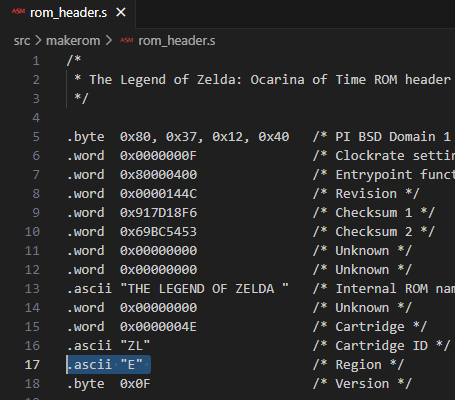
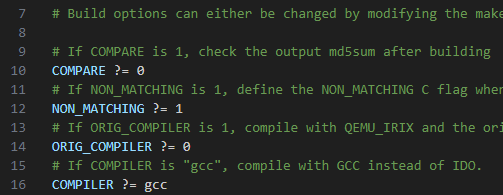

Initial ROM editing Set-Up
1.- In VSCode press Ctrl+P to search for a file in the environment. Search for rom_headers.s and open it
2.- Change the region from “P” to “E” and press Ctrl+S to save the changes
Note
P is PAL and E is NTSC (PAL runs at 16 fps and NTSC runs at 20 fps)
3.- Press again Ctrl+P, search Makefile and open it
4.- Modify lines 10, 12 and 16 as shown in the image
5.- Modify all: section to add a destination folder where save the modified rom when compiled
Note
You can find all section by pressing Ctrl+F and searching for all:
cp $(ROM) /mnt/c/Users/megab/Desktop/
Warning
You need to use tabulations in this file. If you use spaces, it will fail
- 6.- Solve opening in-game menu crash in emulator
1.- Press Ctrl+P in VSCode, search for a file called
z_map_exp.cand open it2.- Press Ctrl+F and search for
Minimap_Draw(3.- Change the
<=in the first if statement with only<
EXTRA: Dedicate more memory to show link holding item models
This step is comletly optional and it will only be useful if, in the future, you want to model an obtainable item wich size is greater than the maxumum (12Kb)
What we are going to do is increase that maximum size to 44Kb and this should not have any negative impact in the game (at least in emulator)
Note
The models that I’m talking about is the ones that are used when link gets a new item (geting kokiri sword from the chest and having it rotate over links hands)
1.- Press Ctrl+P in VSCode, search for a file called
z_player.cand open it2.- Press Ctrl+F and search for
malloc3.- Change the
0x3008inside the parentesis with0xB008